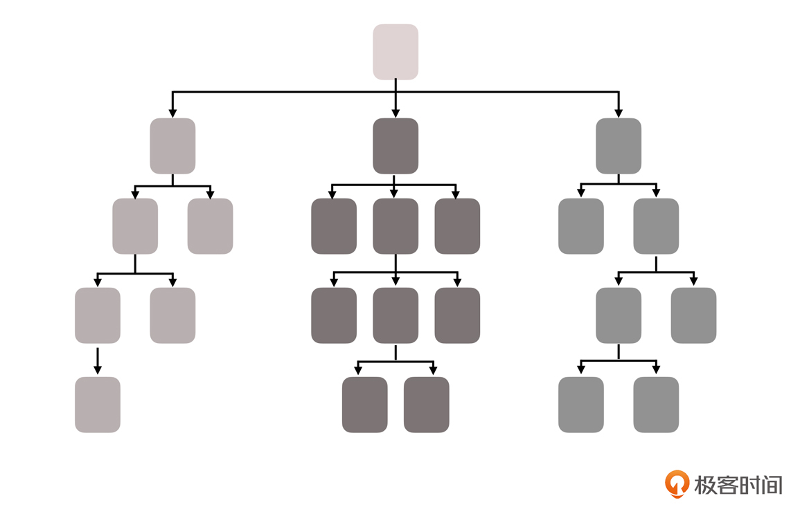
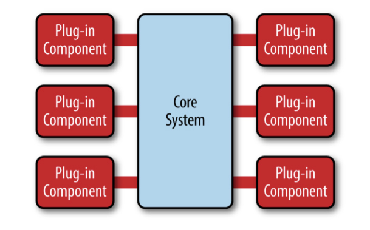
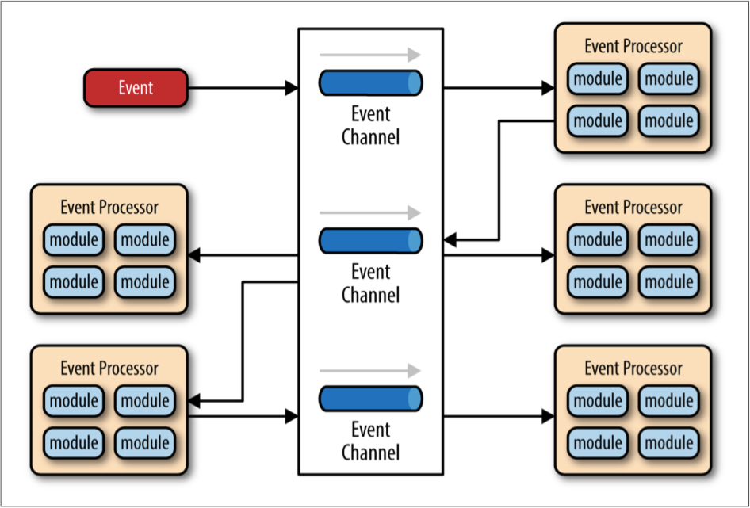

- 00 _导读 _ 什么是“The Fenix Project”？.md
- 00 开篇词 _ 如何构建一个可靠的分布式系统？.md
- 01 _ 原始分布式时代：Unix设计哲学下的服务探索.md
- 02 _ 单体系统时代：应用最广泛的架构风格.md
- 03 _ SOA时代：成功理论与失败实践.md
- 04 _ 微服务时代：SOA的革命者.md
- 05 _ 后微服务时代：跨越软件与硬件之间的界限.md
- 06 _ 无服务时代：“不分布式”云端系统的起点.md
- 07 _ 远程服务调用（上）：从本地方法到远程方法的桥梁.md
- 08 _ 远程服务调用（下）：如何选择适合自己的RPC框架？.md
- 09 _ RESTful服务（上）：从面向过程编程到面向资源编程.md
- 10 _ RESTful服务（下）：如何评价服务是否RESTful？.md
- 11 _ 本地事务如何实现原子性和持久性？.md
- 12 _ 本地事务如何实现隔离性？.md
- 13 _ 全局事务和共享事务是如何实现的？.md
- 14 _ 分布式事务之可靠消息队列.md
- 15 _ 分布式事务之TCC与SAGA.md
- 16 _ 域名解析系统，优化HTTP性能的第一步.md
- 17 _ 客户端缓存是如何帮助服务器分担流量的？.md
- 18 _ 传输链路，优化HTTP传输速度的小技巧.md
- 19 _ 如何利用内容分发网络来提高网络性能？.md
- 20 _ 常见的四层负载均衡的工作模式是怎样的？.md
- 21 _ 服务端缓存的三种属性.md
- 22 _ 分布式缓存如何与本地缓存配合，提高系统性能？.md
- 23 _ 认证：系统如何正确分辨操作用户的真实身份？.md
- 24 _ 授权（上）：系统如何确保授权的过程可靠？.md
- 25 _ 授权（下）：系统如何确保授权的结果可控？.md
- 26 _ 凭证：系统如何保证与用户之间的承诺是准确完整且不可抵赖的？.md
- 27 _ 保密：系统如何保证敏感数据无法被内外部人员窃取滥用？.md
- 28 _ 传输（上）：传输安全的基础，摘要、加密与签名.md
- 29 _ 传输（下）：数字证书与传输安全层.md
- 30 _ 验证：系统如何确保提交给服务的数据是安全的？.md
- 31 _ 分布式共识（上）：想用好分布式框架，先学会Paxos算法吧.md
- 32 _ 分布式共识（下）：Multi Paxos、Raft与Gossip，分布式领域的基石.md
- 33 _ 服务发现如何做到持续维护服务地址在动态运维中的时效性？.md
- 34 _ 路由凭什么作为微服务网关的基础职能？.md
- 35 _ 如何在客户端实现服务的负载均衡？.md
- 36 _ 面对程序故障，我们该做些什么？.md
- 37 _ 要实现某种容错策略，我们该怎么做？.md
- 38 _ 限流的目标与模式.md
- 39 _ 如何构建零信任网络安全？.md
- 40 _ 如何实现零信任网络下安全的服务访问？.md
- 41 _ 分布式架构中的可观测到底说的是什么？.md
- 42 _ 分析日志真的没那么简单.md
- 43 _ 一个完整的分布式追踪系统是什么样子的？.md
- 44 _ 聚合度量能给我们解决什么问题？.md
- 45 _ 模块导学：从微服务到云原生.md
- 46 _ 容器的崛起（上）：文件、访问、资源的隔离.md
- 47 _ 容器的崛起（下）：系统、应用、集群的封装.md
- 48 _ 以容器构建系统（上）：隔离与协作.md
- 49 _ 以容器构建系统（下）：韧性与弹性.md
- 50 _ 应用为中心的封装（上）：Kustomize与Helm.md
- 51 _ 应用为中心的封装（下）：Operator与OAM.md
- 52 _ Linux网络虚拟化（上）：信息是如何通过网络传输被另一个程序接收到的？.md
- 53 _ Linux网络虚拟化（下）：Docker所提供的容器通讯方案有哪些？.md
- 54 _ 容器网络与生态：与CNM竞争过后的CNI下的网络插件生态.md
- 55 _ 谈谈Kubernetes的存储设计理念.md
- 56 _ Kubernetes存储扩展架构：一个真实的存储系统如何接入或移除新存储设备？.md
- 57 _ Kubernetes存储生态系统：几种有代表性的CSI存储插件的实现.md
- 58 _ Kubernetes的资源模型与调度器设计.md
- 59 _ 透明通讯的涅槃（上）：通讯的成本.md
- 60 _ 透明通讯的涅槃（下）：控制平面与数据平面.md
- 61 _ 服务网格与生态：聊聊服务网格的两项标准规范.md
- 63 _ 基于Spring Boot的单体架构.md
- 64 _ 基于Spring Cloud的微服务架构.md
- 65 _ 基于Kubernetes的微服务架构.md
- 66 _ 基于Istio的服务网格架构.md
- 67 _ 基于云计算的无服务架构.md
- 春节特别放送（上）_ 有的放矢，事半功倍.md
- 春节特别放送（下）_ 积累沉淀，知行合一.md
- 用户故事 _ 詹应达：持续成长，不惧未来.md
- 结束语 _ 程序员之路.md
- 结课测试 _ 一套习题，测出你的掌握程度.md
03 _ SOA时代：成功理论与失败实践
你好，我是周志明。
SOA架构是第一次被广泛使用过的、通过分布式服务来构建信息系统的工程实践。它有完善的理论和工具，可以说，它解决了分布式系统中，几乎所有主要的技术问题。
但遗憾的是，虽然SOA架构曾经被视为更大规模的软件发展的方向，但它最终还是没能成为一种普适的软件架构。
所以今天，我们就来探索一下SOA架构，一起来找找，它没能成为普适的软件架构的原因。通过这一讲，你能从中体会到SOA的设计思想与原则，理解它为什么不能成功。
三种代表性的服务拆分架构模式
在上一讲，我曾经提到过，为了对大型的单体系统进行拆分，让每一个子系统都能独立地部署、运行、更新，开发者们尝试了很多种方案。
所以，在介绍SOA架构模式之前，我还要先带你学习三种比较有代表性的服务拆分的架构模式。这些架构是SOA演化过程的中间产物，你也可以理解为，它们是SOA架构出现的必要前提。
烟囱式架构（Information Silo Architecture）
第一种架构模式是烟囱式架构。
信息烟囱也被叫做信息孤岛（Information Island），使用这种架构的系统呢，也被称为孤岛式信息系统或者烟囱式信息系统。这种信息系统，完全不会跟其他相关的信息系统之间进行互操作，或者是进行协调工作。
那你就会发现，这样的系统其实并没有什么“架构设计”可言。你还记不记得，我在上一讲中举的那个“企业与部门”的例子？如果两个部门真的完全不会发生任何交互，那我们就并没有什么理由，一定要强迫他们必须在一栋楼里办公。
所以，两个不发生交互的信息系统，让它们使用独立的数据库、服务器，就可以完成拆分了。
而唯一的问题，也是这个架构模式的致命问题，那就是：企业中真的存在完全不发生交互的部门吗？

对于两个信息系统来说，哪怕真的毫无业务往来关系，但系统的人员、组织、权限等主数据，会是完全独立、没有任何重叠的吗？这样“独立拆分”“老死不相往来”的系统，显然不可能是企业所希望见到的。
微内核架构（Microkernel Architecture）
第二种是微内核架构，它也被称为插件式架构（Plug-in Architecture）。
既然在烟囱式架构中，我们说两个没有业务往来关系的系统，也可能需要共享人员、组织、权限等一些公共的主数据，那就不妨把这些主数据，连同其他可能被各个子系统使用到的公共服务、数据、资源，都集中到一块，成为一个被所有业务系统共同依赖的核心系统（Kernel，也称为Core System）。
这样的话，具体的业务系统就能以插件模块（Plug-in Modules）的形式存在了，就可以为整个系统提供可扩展的、灵活的、天然隔离的功能特性。

（来自O’Reilly的开放文档《Software Architecture Patterns》）
以更高层次的抽象程度来看，任何计算机系统都是由各种架构的软件互相配合来实现各种功能的，这一讲我介绍的各种架构模式，一般都可以看作是整个系统的一种插件。对于产品型应用程序来说，如果我们想将新特性或者功能及时加入系统，微内核架构会是一个不错的选择。
微内核架构也可以嵌入到其它架构模式之中，通过插件的方式，来提供逐步演化的功能和增量开发。所以，如果你准备实现一个能够支持二次开发的软件系统，微内核就是一种良好的架构模式。
不过，微内核架构也有它的局限和使用前提，它会假设系统中各个插件模块之间是互不认识的（不可预知系统会安装哪些模块），这些插件会访问内核中一些公共的资源，但不会发生直接交互。
可是，无论是在企业信息系统还是在互联网，在许多场景中这一假设都不成立。比如说，你要建设一个购物网站，支付子系统和用户子系统是独立的，但当交易发生时，支付子系统可能需要从用户子系统中得到是否是VIP、银行账号等信息，而用户子系统也可能要从支付子系统中获取交易金额等数据，来维护用户积分。
所以，我们必须找到一个办法，它既能拆分出独立的系统，也能让拆分后的子系统之间可以顺畅地互相调用通讯。
事件驱动架构（Event-Driven Architecture）
那么，为了能让子系统之间互相通讯，事件驱动架构就应运而生了。
这种架构模式的运作方案是，在子系统之间建立一套事件队列管道（Event Queues），来自系统外部的消息将以事件的形式发送到管道中，各个子系统可以从管道里获取自己感兴趣、可以处理的事件消息，也可以为事件新增或者是修改其中的附加信息，甚至还可以自己发布一些新的事件到管道队列中去。
这样一来，每一个消息的处理者都是独立的、高度解耦的，但它又能与其他处理者（如果存在该消息处理者的话）通过事件管道来进行互动。

（来自O’Reilly的开放文档《Software Architecture Patterns》）
那么，当系统演化至事件驱动架构的时候，我在原始分布式时代这一讲的结尾中，提到的第二条通往大规模软件的路径，也就是仍然在并行发展的远程服务调用，就迎来了SOAP协议的诞生（我在后面第7~10讲分享远程服务调用的时候，还会给你详细介绍它，你到时可以再次印证一下这一讲的内容）。
此时“面向服务的架构”（Service Oriented Architecture，SOA），就已经有了登上软件架构舞台所需要的全部前置条件了。
SOA架构时代的探索
SOA的概念最早是由Gartner公司在1994年提出的。当时的SOA还不具备发展的条件，直到2006年情况才有所变化，IBM、Oracle、SAP等公司，共同成立了OSOA联盟（Open Service Oriented Architecture），来联合制定和推进SOA相关行业标准。
到2007年，在结构化资讯标准促进组织（Organization for the Advancement of Structured Information Standards，OASIS）的倡议与支持下，OSOA就由一个软件厂商组成的松散联盟，转变为了一个制定行业标准的国际组织。它联合OASIS共同新成立了Open CSA组织（Open Composite Services Architecture），也就是SOA的“官方管理机构”。
当软件架构发展至SOA时代的时候，其中的许多概念、思想都已经能在今天的微服务中，找到对应的身影了。比如说，服务之间的松散耦合、注册、发现、治理、隔离、编排等等，都是微服务架构中耳熟能详的概念了，也大多是在分布式服务刚被提出的时候，就已经可以预见到的困难。
所以，SOA就针对这些问题，乃至于针对“软件开发”这件事儿本身，进行了更具体、更系统的探索。
更具体
“更具体”体现在，尽管SOA本身还是属于一种抽象概念，而不是特指某一种具体的技术，但它比单体架构和烟囱式架构、微内核架构、事件驱动架构，都要更具可操作性，细节也充实了很多。所以，我们已经不能简单地把SOA看作是一种架构风格了，而是可以称之为一套软件架构的基础平台了。
那，我们怎么理解“基础平台”这个概念呢？在我看来，主要是下面几个方面：
- SOA拥有领导制定技术标准的组织Open CSA；
- SOA具有清晰的软件设计的指导原则，比如服务的封装性、自治、松耦合、可重用、可组合、无状态，等等；
- SOA架构明确了采用SOAP作为远程调用的协议，依靠SOAP协议族（WSDL、UDDI和一大票WS-*协议）来完成服务的发布、发现和治理；
- SOA架构会利用一个被称为是企业服务总线（Enterprise Service Bus，ESB）的消息管道，来实现各个子系统之间的通讯交互，这就让各个服务间在ESB的调度下，不需要相互依赖就可以实现相互通讯，既带来了服务松耦合的好处，也为以后可以进一步实现业务流程编排（Business Process Management，BPM）提供了基础；
- SOA架构使用了服务数据对象（Service Data Object，SDO）来访问和表示数据，使用服务组件架构（Service Component Architecture，SCA）来定义服务封装的形式和服务运行的容器；
- ……
在这一整套成体系、可以互相精密协作的技术组件的支持下，我们从技术可行性的角度来评判的话，SOA实际上就可以算是成功地解决了分布式环境下，出现的诸如服务注册、发现、隔离、治理等主要技术问题了。
更系统
这里我说的“更系统”，指的是SOA的宏大理想。因为SOA最根本的目标，就是希望能够总结出一套自上而下的软件研发方法论，让企业只需要跟着它的思路，就能够一揽子解决掉软件开发过程中的全套问题。比如，如何挖掘需求、如何将需求分解为业务能力、如何编排已有服务、如何开发测试部署新的功能，等等。
如果这个目标真的能够达成，那么软件开发就有可能从此迈进工业化大生产的阶段。你可以试想一下，如果有一天，你在写符合客户需求的软件时，就像写八股文一样有迹可循、有法可依，那对你来说或许很无趣，但这肯定可以大幅提升整个社会实施信息化的效率。
SOA在21世纪最初的十年里，曾经盛行一时，有IBM等一众巨头为其摇旗呐喊，吸引了不少软件开发商，尤其是企业级软件开发商的跟随，但最终却还是偃旗息鼓，沉寂了下去。
原因也很简单，开发信息系统毕竟不是写八股文，SOA架构过于严谨精密的流程与理论，导致了软件开发的全过程，都需要有懂得复杂概念的专业人员才能够驾驭。从SOA诞生的那一天起，就已经注定了它只能是少数系统的阳春白雪式的精致奢侈品：它可以实现多个异构大型系统之间的复杂集成交互，却很难作为一种具有广泛普适性的软件架构风格来推广。
我在后面第7~10讲介绍远程服务调用时，我还会为你介绍Web Service的兴起与衰落。Web Service之所以被逐渐边缘化，最本质的原因就是过于严格的规范定义，给架构带来了过度的复杂性。
而构建在Web Service基础之上的ESB、BPM、SCA、SDO等诸多的上层建筑，就进一步加剧了这种复杂性。
SOA最终没有获得成功的致命伤，其实跟当年的EJB（Enterprise JavaBean，企业级JavaBean）的失败如出一辙。
尽管在当时，EJB有Sun Microsystems（被甲骨文收购）和IBM等一众巨头在背后力挺，希望能把它发展成一套面向信息系统的编程范式，但它仍然被以Spring、Hibernate为代表的“草根框架”给打败了。可见，任何事物一旦脱离了人民群众，最终都会淹没在群众的海洋之中，就连信息技术也不曾例外过。
最后，当你读到这一段的时候，你不妨再重新思考下我们这一讲的开头提到的，“如何使用多个独立的分布式服务共同构建一个更大型系统”这个问题，再回顾下“原始分布式时代”这一讲中，Unix DCE提出的分布式服务的主旨：“让开发人员不必关心服务是远程还是本地，都能够透明地调用服务或者访问资源”。
经过了三十年的技术发展，信息系统经历了巨石、烟囱、微内核、事件驱动、SOA等架构模式，应用受架构复杂度的牵绊却是越来越大，距离“透明”二字已经越来越远了。这是否算不自觉间忘记了当年的初心呢？
接下来我们要探索的微服务时代，似乎正是带着这样自省式的问句而开启的。
小结
这一讲，我带你学习了解了SOA架构，重点了解了从原始分布式架构、单体架构演进到SOA架构这段过程中的一些中间产物，如烟囱式架构、微内核架构、事件驱动架构等。
另外，我之所以带你解构SOA架构，就是要帮助你弄清楚它成功的部分，比如它是如何提出了哪些技术、解决问题的方法论是什么，它是如何看待分布式、乃至是如何看待软件开发的；你也要弄清楚它失败的部分，要清楚为什么SOA在众多软件业巨头的推动下，仍然没能成为软件开发者所普遍接受的普适的软件开发方法。这是你了解和掌握推动架构时代演进原因的重要方式。
一课一思
你是否使用过SOA的方法论来开发软件系统呢？无论有还是没有，作为一个软件开发者，你是否愿意软件开发向着工业化方向发展，让软件类似工业产品制造那样，可以在规范、理论、工具、技术的支持下，以流水线的方式生产出来？
欢迎在留言区分享你的见解。如果你身边的朋友，也对SOA架构的成功与失败感兴趣，希望你能把今天的内容分享给TA。
© 2019 - 2023 Liangliang Lee. Powered by gin and hexo-theme-book.